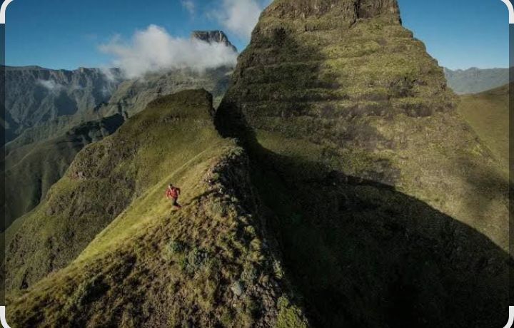

Welcome to Lesotho
Lesotho is a landlocked, surrounded by South Africa. It is often called the Kingdom in the Sky because much of the country sits high above sea level.
Visitors come to enjoy its mountain scenery, traditional culture, local crafts and outdoor experiences. The Basotho blanket and traditional pony trekking are familiar parts of the country's cultural identity.
Our aim
Our aim is to help visitors learn about destinations in Lesotho and plan their trips with useful starting information.

Travel thoughtfully
- Respect local customs and communities.
- Keep natural areas clean and take litters with you.
- Check local weather and road conditions before travelling.
- Ask local guides about safe routes and activities.